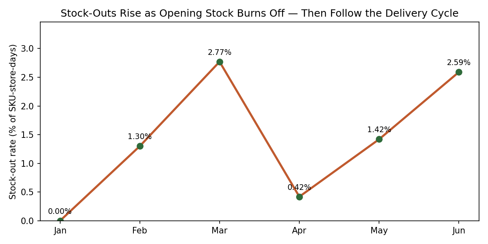
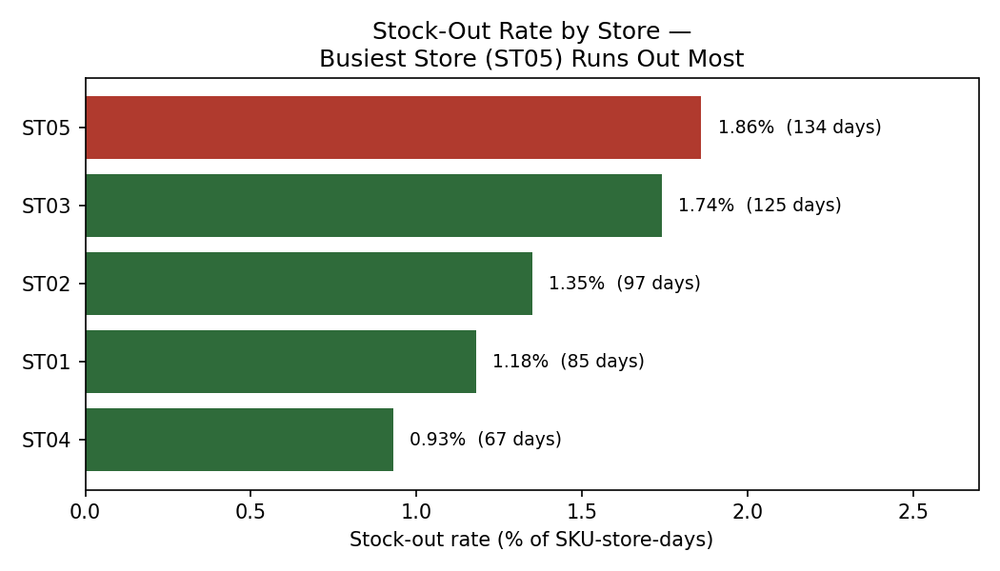
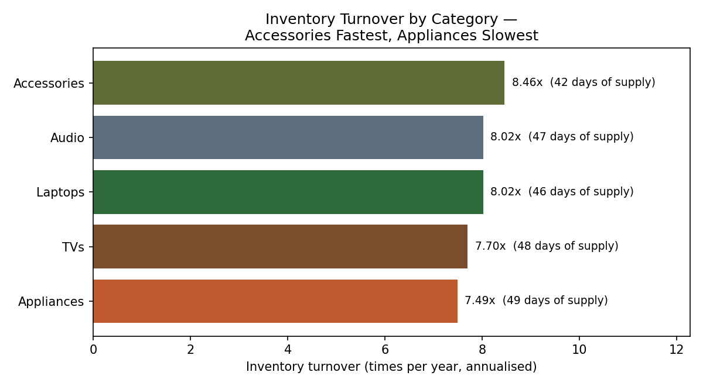
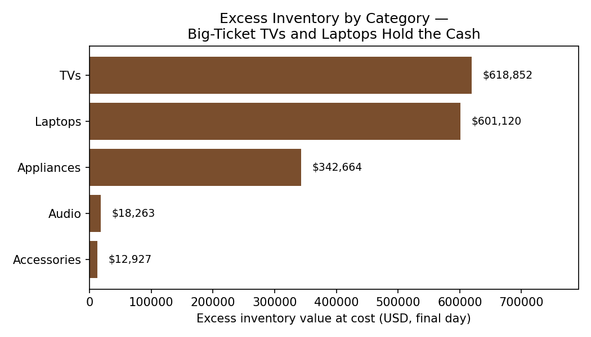
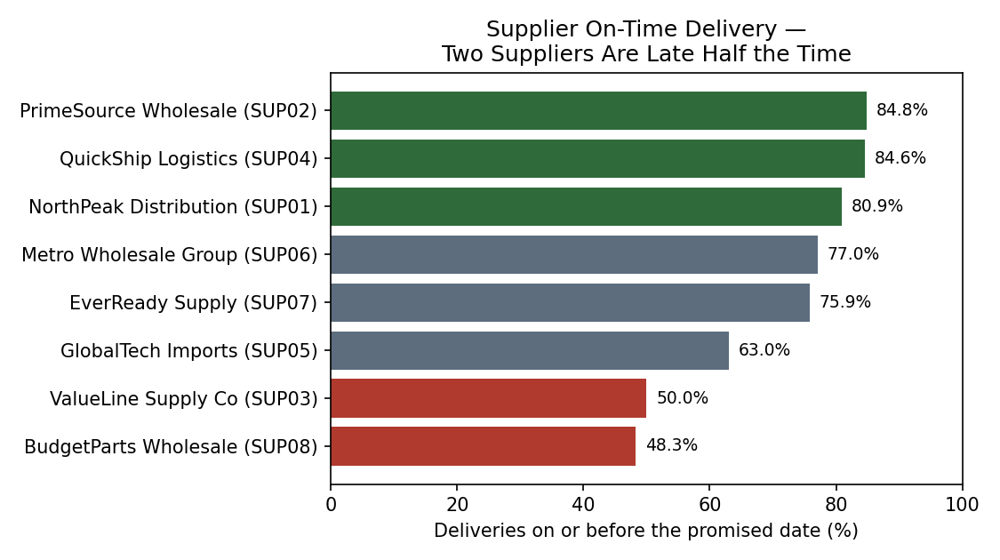
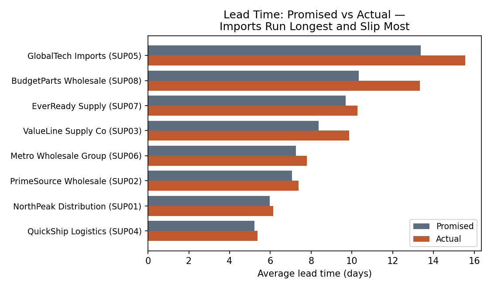

Where the shelves go empty
Stock-out rate by month

Stock-out rate by store

Inventory turnover by category

Excess inventory by category

Supplier scorecard — promised vs actual
On-time delivery %

Lead time: promised vs actual

| Supplier | Orders | Promised (days) | Actual (days) | On-time | Late orders | Avg days late | Qty fill |
|---|---|---|---|---|---|---|---|
| BudgetParts Wholesale (SUP08) | 29 | 10.34 | 13.34 | 48.28% | 15 | 5.80 | 95.79% |
| ValueLine Supply Co (SUP03) | 28 | 8.36 | 9.86 | 50.00% | 14 | 3.00 | 99.20% |
| GlobalTech Imports (SUP05) | 73 | 13.38 | 15.56 | 63.01% | 27 | 5.89 | 97.60% |
| EverReady Supply (SUP07) | 29 | 9.69 | 10.28 | 75.86% | 7 | 2.43 | 100.00% |
| Metro Wholesale Group (SUP06) | 61 | 7.26 | 7.79 | 77.05% | 14 | 2.29 | 100.00% |
| NorthPeak Distribution (SUP01) | 68 | 5.97 | 6.13 | 80.88% | 13 | 1.46 | 100.00% |
| QuickShip Logistics (SUP04) | 39 | 5.23 | 5.36 | 84.62% | 6 | 1.17 | 100.00% |
| PrimeSource Wholesale (SUP02) | 33 | 7.06 | 7.39 | 84.85% | 5 | 2.20 | 100.00% |
Reading this table is the real analyst skill: the cheapest suppliers are the most expensive ones. BudgetParts is late on half its orders and ships short (95.79% fill) — every late delivery on a fast-selling SKU is an empty shelf and a lost sale.
Top stock-out SKUs
| SKU | Product | Category | Supplier | Stock-out days | Stock-out rate | Est. lost sales |
|---|---|---|---|---|---|---|
| SKU003 | TV Model 3 | TVs | SUP05 | 79 | 8.78% | $296,601 |
| SKU011 | Laptop Model 4 | Laptops | SUP05 | 61 | 6.78% | $129,486 |
| SKU013 | Laptop Model 6 | Laptops | SUP05 | 46 | 5.11% | $138,645 |
| SKU035 | Accessory Model 4 | Accessories | SUP08 | 39 | 4.33% | $6,386 |
| SKU027 | Appliance Model 4 | Appliances | SUP07 | 38 | 4.22% | $110,752 |
The three worst stock-out SKUs are all supplied by GlobalTech Imports (SUP05) — the longest lead times in the chain (13.38 days promised, 15.56 actual). Fast-selling products cannot wait two weeks for a late delivery.
Key insights
- The headline in-stock rate hides real money: 98.59% in stock sounds healthy, but the 508 empty-shelf days concentrate in fast-selling, high-price SKUs and cost an estimated $1,086,953 — about 2.7% of the period's $40.67M revenue.
- Worst stock-out SKU: SKU003 (TV Model 3) — empty 79 of 900 SKU-store-days (8.78%), an estimated $296,601 of lost sales from one product.
- Busiest store runs out most: ST05 (Denver) has the highest stock-out rate at 1.86%, because reorder points are set from chain-wide category averages, not from each store's own demand.
- Two suppliers are late half the time: BudgetParts Wholesale (48.28% on-time) and ValueLine Supply Co (50.00%) — while PrimeSource and QuickShip both deliver on time ~85% of the time.
- $1,593,826 of excess stock sits above a 60-day supply, mostly in TVs ($618,852) and Laptops ($601,120) — slow cash locked in expensive products while fast ones run out.
- Root cause is a settings problem: reorder points calculated from category-average demand give fast SKUs too little cover and slow SKUs far too much. Setting them per SKU-store from its own demand history attacks stock-outs and excess at the same time.
Limitations: lost sales are an estimate — only days the shelf was empty all day are counted, valued at that SKU-store's average daily sales, so the true loss is higher. "Excess" depends on the stated 60-day threshold. Demand and supplier behaviour are simulated with a fixed seed (42) to mirror a real electronics retailer; no real company data is used.